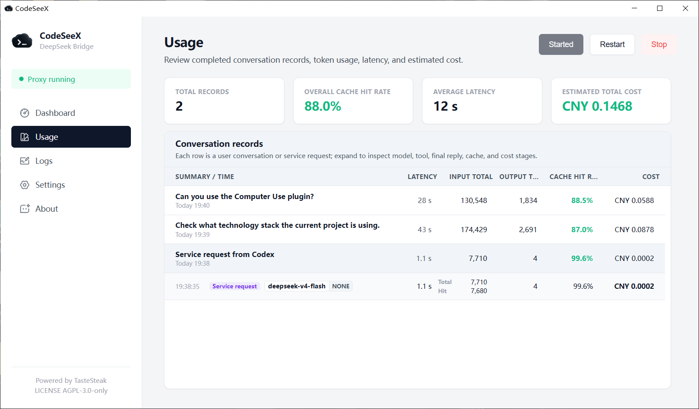

Codex-facing API
OpenAI-compatible /v1 endpoints, generated catalog, and local capability boundary.
CodeSeeX classifies requests, adapts DeepSeek provider behavior, owns hosted tools, and keeps usage explainable without becoming a second transcript store.
Codex Desktop -> local adapter -> agent bridge -> provider adapter -> manager runtime.
OpenAI-compatible /v1 endpoints, generated catalog, and local capability boundary.
Request classification, client tool handoff, context compilation, and replay controls.
DeepSeek streaming, reasoning, DSML tool protocol parsing, and usage normalization.
Status, logs, usage, settings, balance, update checks, and tray operations.
Codex owns the conversation transcript. CodeSeeX keeps only current-process bridge state and bounded diagnostics needed to finish requests and explain runtime behavior.

DeepSeek-specific protocol text is treated as provider protocol, not user-visible prose. When tools are available it becomes standard tool calls; otherwise it is consumed at the safety boundary.
Billable upstream calls are grouped into user sessions with model iterations, tool phases, client handoffs, service requests, cache hits, misses, output, latency, and estimated cost.
Safe diagnostic logs show categories, severity, request IDs, source probes, context warnings, and protocol events without exposing prompt payloads by default.
Start with the generated TOML, keep the manager open for observability, and use the docs when you need to reason about tools, state, or privacy.